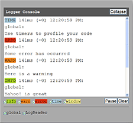

YUI 2: Logger
YUI 2: Logger
 The Logger Control provides a simple way to read or write log messages with
a single line of code. With this control, you can tap into the rich
event-driven messages included with the YUI Library's debug files; This
messaging allows you to get a fuller picture of the inner workings of any YUI
Library component. The Logger Control provides a simple messaging interface
that allows you to filter, pause, resume, and clear log messages on your
screen. Whether or not you invoke this UI, you can monitor log output via the
FireBug extension for Firefox or via the Safari JavaScript console. The Logger Control supports
logging messages with customizable categories and
sources. Adventurous developers can extend Logger to build their own
implementations to suit any requirement.
The Logger Control provides a simple way to read or write log messages with
a single line of code. With this control, you can tap into the rich
event-driven messages included with the YUI Library's debug files; This
messaging allows you to get a fuller picture of the inner workings of any YUI
Library component. The Logger Control provides a simple messaging interface
that allows you to filter, pause, resume, and clear log messages on your
screen. Whether or not you invoke this UI, you can monitor log output via the
FireBug extension for Firefox or via the Safari JavaScript console. The Logger Control supports
logging messages with customizable categories and
sources. Adventurous developers can extend Logger to build their own
implementations to suit any requirement.
On This Page:
Quick Links:
- Examples: Explore examples of the Logger Control in action.
- API Documentation: View the full API documentation for the Logger Control.
- Release Notes: Detailed change log for the Logger Control.
- License: The YUI Library is issued under a BSD license.
- Download: Download the Logger Control as part of the full YUI Library at YUILibrary.com.
Getting Started
To use the Logger component, include the following source files in your web page with the script tag:
<!--CSS file (default YUI Sam Skin) --> <link type="text/css" rel="stylesheet" href="http://yui.yahooapis.com/2.9.0/build/logger/assets/skins/sam/logger.css"> <!-- Dependencies --> <script src="http://yui.yahooapis.com/2.9.0/build/yahoo-dom-event/yahoo-dom-event.js"></script> <!-- OPTIONAL: Drag and Drop (not required if not enabling drag and drop) --> <script src="http://yui.yahooapis.com/2.9.0/build/dragdrop/dragdrop-min.js"></script> <!-- Source file --> <script src="http://yui.yahooapis.com/2.9.0/build/logger/logger-min.js"></script>
yui-skin-sam class name to an element that is a parent of the element
in which the Logger Control lives. You can usually accomplish this simply by putting the class on the
<body> tag:
<body class="yui-skin-sam">
For more information on skinning YUI components and making use of default skins, see our Understanding YUI Skins article here on the website.

YUI Dependency Configurator:
Instead of copying and pasting the filepaths above, try letting the YUI dependency Configurator determine the optimal file list for your desired components; the Configurator uses YUI Loader to write out the full HTML for including the precise files you need for your implementation.
Note: If you wish to include this component via the YUI Loader, its module name is logger. (Click here for the full list of module names for YUI Loader.)
Where these files come from: The files included using the text above will be served from Yahoo! servers. JavaScript files are minified, meaning that comments and white space have been removed to make them more efficient to download. To use the full, commented versions or the -debug versions of YUI JavaScript files, please download the library distribution and host the files on your own server.
Order matters: As is the case generally with JavaScript and CSS, order matters; these files should be included in the order specified above. If you include files in the wrong order, errors may result.
Reading Log Messages
Instantiate a LogReader to display log messages on your web page:
var myLogReader = new YAHOO.widget.LogReader();
Attach a LogReader to a specific HTML element by passing the element's ID to Logger's constructor:
<div id="myLogger"></div>
var myLogReader = new YAHOO.widget.LogReader("myLogger");
Attach a LogReader to a specific HTML element by passing an element reference to Logger's constructor:
var myContainer = document.body.appendChild(document.createElement("div")); var myLogReader = new YAHOO.widget.LogReader(myContainer);
Writing Log Messages
Use the YAHOO.log() function, part of the Yahoo Global Object, to write log messages from anywhere in your code:
// Assigns default category "info" and default source "global" YAHOO.log("My log message");
Assign a category to your log message:
// Assigns the category "source", which has a pre-defined style YAHOO.log("My log message", "warn");
Assign a custom category to your log message:
/* customize a color */ .yui-log .mycategory { background-color: #7B0099; }
// Assigns a custom, case-insensitive category "mycategory", which will // be styled by the custom CSS you define with the same string YAHOO.log("My log message", "mycategory");
Assign a category and a source to your log message:
YAHOO.log("My log message", "error", "buggyscript.js");
Using Logger
This section describes in more detail the Logger, LogReader, and LogWriter classes, as well as some common configuration cases.
The Logger Class
YAHOO.widget.Logger is a singleton class that manages incoming log messages and makes them
available for output to LogReader instances. By setting the Logger property
maxStackEntries, you can cap the number of log messages the Logger will manage.
Once the limit is reached, the oldest log message will be evicted to make room
for the newer entry.
Some browsers have implemented a
global console.log() method which can serve various functionalities. For instance,
if you have the FireBug extension to Firefox installed, or the Safari JavaScript
console enabled, logging messages to console.log() will output to browser-specific components.
By default, the YUI Logger does not call this method, but you may wish
enable this feature by calling YAHOO.widget.Logger.enableBrowserConsole(). Once enabled,
calling YAHOO.widget.Logger.disableBrowserConsole() will disable this feature.
The Logger class also allows you to clear out all previous log messages:
// Clears internal array of log message objects and clears all previous // log messages from any LogReaders. YAHOO.widget.Logger.reset();
The LogReader Class
YAHOO.widget.LogReader class creates a standalone UI control on
a web page to easily display Logger messages included with debug builds of the YUI
Library. LogReaders allow you to take full advantage of features like filtration
by category and by source. The LogReader interface also allows you to pause and
resume logging during script execution. Although LogReader has been
pre-defined with a modestly configurable look and feel, advanced implementers
may fully customize LogReader's CSS or subclass LogReader entirely for a
customized experience.
Visibility of the LogReader UI is controlled using calls to show() and hide(). By default, the LogReader is visible.
// Hide the Log Reader UI (no loss of log messages) myLogReader.hide(); // Show the Log Reader UI myLogReader.show();
Common Configurations
The following properties are configurable using an object literal to set values in the constructor:
- width
- Width of console
- height
- Height of container
- left/top/right/bottom
- Position from edge of viewport
- footerEnabled
- If false, hides the footer
- logReaderEnabled
- If false, LogReader is paused
- thresholdMax
- Maximum number of messages to show in the console
- thresholdMin
- How many messages to keep displayed when thresholdMax is reached and console is cleared
- draggable
- If false, disables LogReader draggability, otherwise console is draggable (requires Drag and Drop Utility)
- outputBuffer
- Size of output buffer in milliseconds -- higher values will enhance performance
- newestOnTop
- If false, new entries will be added below previous entries
- verboseOutput
- If false, log entries will be printed in a more compact format
- entryFormat
- innerHTML template to customize the printed log entries
var myConfigs = { width: "20px", height: "30em", newestOnTop: false, footerEnabled: false }; var myContainer = null; // LogReader will create markup from scratch var myLogReader = new YAHOO.widget.LogReader(myContainer, myConfigs);
Customizing Output
The LogReader class allows you to customize the output format of log messages in three ways:
- The config
verboseOutputtoggles between the default verbose and compact formats - The config
entryFormatassigns a format template used to generate the entries' innerHTML strings - The LogReader's
formatMsgmethod can be overridden with custom code
entryFormat Templates
// Customize the formatting of output to LogReader myLogReader.formatMsg = function(oLogMsg) { var category = oLogMsg.category; return '<p><span class="'+category+'">'+category+'</span> '+ oLogMsg.msg+'</p>'; };
entryFormat templates can contain markup as well as any of the following bracketed placeholders:
- category
- label
- sourceAndDetail
- message
- localTime
- elapsedTime
- totalTime
For example, the template used for verbose log entries (the default setting), is:
YAHOO.widget.LogReader.VERBOSE_TEMPLATE = "<span class='{category}'>{label}</span>{totalTime}ms (+{elapsedTime}) {localTime}:</p><p>{sourceAndDetail}</p><p>{message}</p>";
Customizing formatMsg
// Customize the formatting of output to LogReader myLogReader.formatMsg = function(oLogMsg) { var category = oLogMsg.category; return '<p><span class="'+category+'">'+category+'</span> '+ oLogMsg.msg+'</p>'; };
The LogWriter Class
The YAHOO.widget.LogWriter class provides a shortcut for implementers who are logging many
messages from the same source. For instance, if you are debugging a class
written in JavaScript, you may want to instantiate a single LogWriter to write
logs for the entire class:
var MyClass = function(){ // Define a toString() for your class that can // identify the class and any instance information this.toString() = function() { return "MyClass instance data"; }; // Instantiate a LogWriter this.logger = new YAHOO.widget.LogWriter(this.toString()); // Now you can write log messages from your LogWriter this.logger.log("A new MyClass has been created","info"); }; // Every instance of your class can have its own LogWriter MyClass.prototype.logger = null; // This will log a message that is filterable by category and by source var myInstance = new MyClass();
Note that when you supply a space-delimited string to the LogWriter constructor, the first word of the string will be used to assign a source to the log message, and the rest of the string will be prepended to the log message for supplementary detail. LogReader will parse the string at the first empty space character. If there are no empty spaces in the string, the entire string will be used to assign a source to the log message.
Skinning Logger
The Logger comes with a default presentation or "skin," part of the "Sam Skin" visual treatment that accompanies most YUI controls. You can read more about the general approach to skinning YUI components in this in-depth article.
In the case of the Logger Control, there is no "core" CSS treatment — which is to say that there is no CSS that is considered essential to the functioning of the control. All of the CSS provided with Logger is part of the Sam Skin visual treatment.

To explore the CSS which controls the Logger's presentation, please review the Logger Skinning Example wherein the full CSS for the control is displayed.
YUI on Mobile: Using Logger Control with "A-Grade" Mobile Browsers
About this Section: YUI generally works well with mobile browsers that are based on A-Grade browser foundations. For example, Nokia's N-series phones, including the N95, use a browser based on Webkit — the same foundation shared by Apple's Safari browser, which is found on the iPhone. The fundamental challenges in developing for this emerging class of full, A-Grade-derived browsers on handheld devices are:
- Screen size: You have a much smaller canvas;
- Input devices: Mobile devices generally do not have mouse input, and therefore are missing some or all mouse events (like mouseover);
- Processor power: Mobile devices have slower processors that can more easily be saturated by JavaScript and DOM interactions — and processor usage affects things like battery life in ways that don't have analogues in desktop browsers;
- Latency: Most mobile devices have a much higher latency on the network than do terrestrially networked PCs; this can make pages with many script, css or other types of external files load much more slowly.
There are other considerations, many of them device/browser specific (for example, current versions of the iPhone's Safari browser do not support Flash). The goal of these sections on YUI User's Guides is to provide you some preliminary insights about how specific components perform on this emerging class of mobile devices. Although we have not done exhaustive testing, and although these browsers are revving quickly and present a moving target, our goal is to provide some early, provisional advice to help you get started as you contemplate how your YUI-based application will render in the mobile world.
More Information:
- Challenges of Interface Design for Mobile Devices - YUI Blog article by Lucas Pettinati, Yahoo! Sr. Interaction Designer.
- Performance Research, Part 5: iPhone Cacheability - Making it Stick - YUI Blog article by Tenni Theurer and Wayne Shea from the Yahoo! Exceptional Performance Team
The Logger control has been tested on several high-end smart phones without any major known issues. It is meant primarily as a development tool, and therefore it is not recommended in production environments. Due to the inherent limitations found in mobile platforms, implementers should take into account the following preliminary list of known issues:
- The LogReader console may take up precious real estate.
- Output to the LogReader may experience delays due to the high-latency environment.
- Support for the native browser
console.log()function may be unreliable at best or altogether non-existent.
Support & Community
The YUI Library and related topics are discussed on the on the YUILibrary.com forums.
Also be sure to check out YUIBlog for updates and articles about the YUI Library written by the library's developers.
Filing Bugs & Feature Requests
The YUI Library's public bug tracking and feature request repositories are located on the YUILibrary.com site. Before filing new feature requests or bug reports, please review our reporting guidelines.

Logger Control Examples:
- Basic Logging
- Configuring LogReader
- Using LogWriter
- Logger Integration with YUI Components
- Skinning Model
Other YUI Examples That Make Use of the Logger Control:
- Complex Application (included with examples for the Layout Manager)
More Reading about the YUI Logger Control:
- JavaScript API's and Debugging, by Jay Kimble (reviews several JavaScript debugging controls)
YUI Logger on del.icio.us:
All YUI 2.x users should review the YUI 2.8.2 security bulletin, which discusses a vulnerability present in YUI 2.4.0-2.8.1.
- YUI Library
- YUI Home
- YUI 3
- YUIBlog
- Bug Reports/Feature Requests
- YUI on GitHub
- YUI License
- YUI 2.x Resources
- YUI 2 Archives
- YUI 2 Examples
- YUI 2 API Docs
- YUI 2 Discussion Forums

- YUI Components
- Animation
- AutoComplete
- Browser History Manager
- Button
- Calendar
- Carousel
- Charts
- Color Picker
- Connection Manager
- Container
- Cookie
- DataSource
- DataTable
- Dom
- Drag & Drop
- Element
- Event
- Get
- ImageCropper
- ImageLoader
- JSON
- Layout Manager
- Logger
- Menu
- Paginator
- Profiler
- ProfilerViewer
- ProgressBar
- Resize
- Rich Text Editor
- Selector
- Slider
- Storage
- StyleSheet
- SWF
- SWFStore
- TabView
- TreeView
- Uploader
- Yahoo Global Object
- YUI Loader
- YUI Test
- Reset CSS
- Base CSS
- Fonts CSS
- Grids CSS
Copyright © 2013 Yahoo! Inc. All rights reserved.